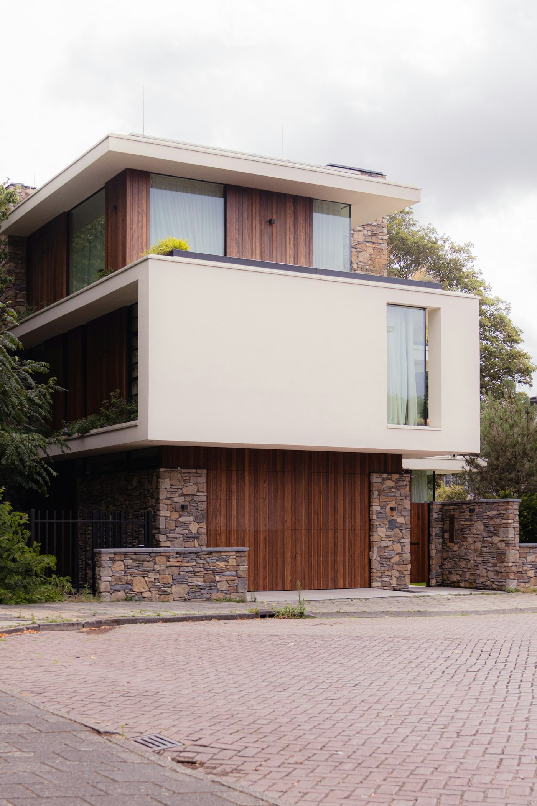
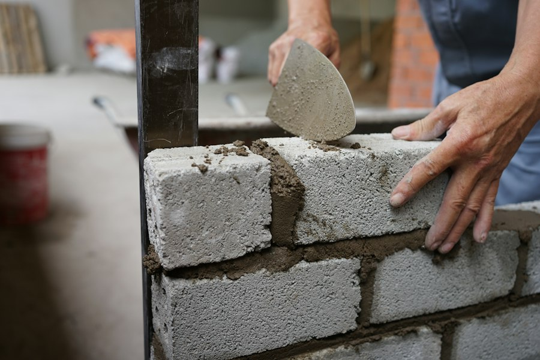

Tu casa, con precio cerrado y plazo por escrito.
Construimos y remodelamos casas en Quito y los valles desde 2008. Antes de mover un bloque firmas el presupuesto, el cronograma y quién responde por cada etapa.
- 18
- años construyendo
- 64
- casas entregadas
- 9 de 10
- en el plazo firmado


Obra en curso N.º 065
- Proyecto
- Casa Tumbaco, dos plantas
- Área
- 218 m²
- Residente
- Ing. Andrea Mora
Avance 62 %Semana 19 de 30